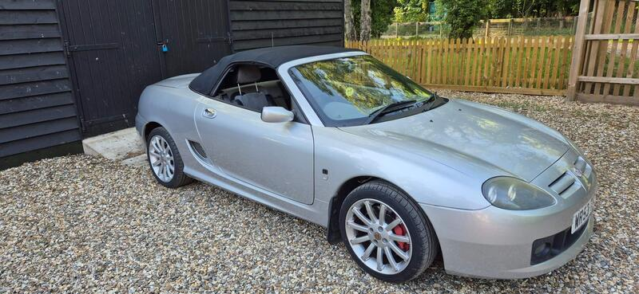
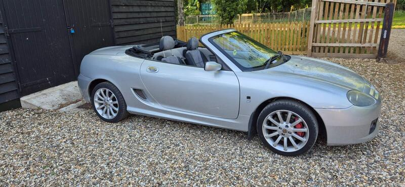
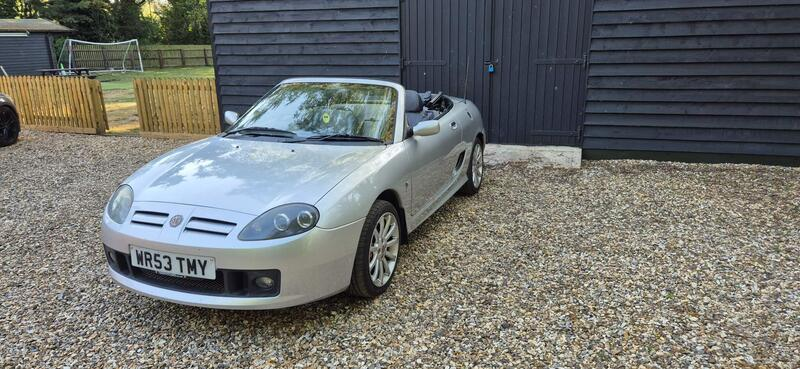

Seller photos from the AutoTrader ad.
MG TF 1.8 Sunstorm SE
A neat TF. Check its head gasket history before buying.
Key facts
| Price | £2,995 |
|---|---|
| Year | 2003 |
| Miles | 70,500 |
| Model | MG TF 1.8 Sunstorm SE |
| Colour | Silver |
| Registration | 2003 (53 reg) |
| Owners | 8 owners |
| Service history | Not stated |
| MOT | Not stated |
| Seller | Private |
| Location | Thetford |
| From GU7 | 104 mi (AutoTrader) |
| Checked | 13 Oct 2026 |
Why buy it
- 70k miles, roof goes up and down easily (ad)
- Clean interior
Things to check
K-series head gasket: ask whether it has an MLS gasket
Check the underfloor coolant pipes and the radiator
- MG MGF / TF weak spots
Can be serious underneath; mild-steel underfloor coolant pipes rust; radiators corrode. K-series head gasket – want proof of MLS gasket, revised oil rail, replaced dowels; VVC mechanism; Hydragas suspension on MGF.
Seller says (extract)
“2003 MG TF 1.8 - 70,000 miles Lovely little convertible in really nice condition for its age. Runs and drives well and is great fun, particularly with the roof down. Finished in silver with black soft top, 16" alloys, red brake calipers and twin exhaust. The roof goes up and down easily and the car looks great both with it up or down. Interior is clean and tidy for its age, and it's clearly been looked after. Only selling as it's no longer needed. A really nice, affordable sports car that's ready to enjoy. Viewings welcome. Happy to answer any questions.…”